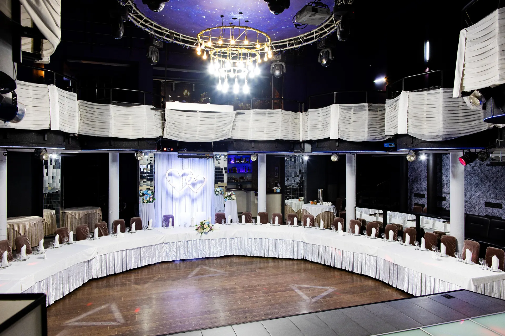
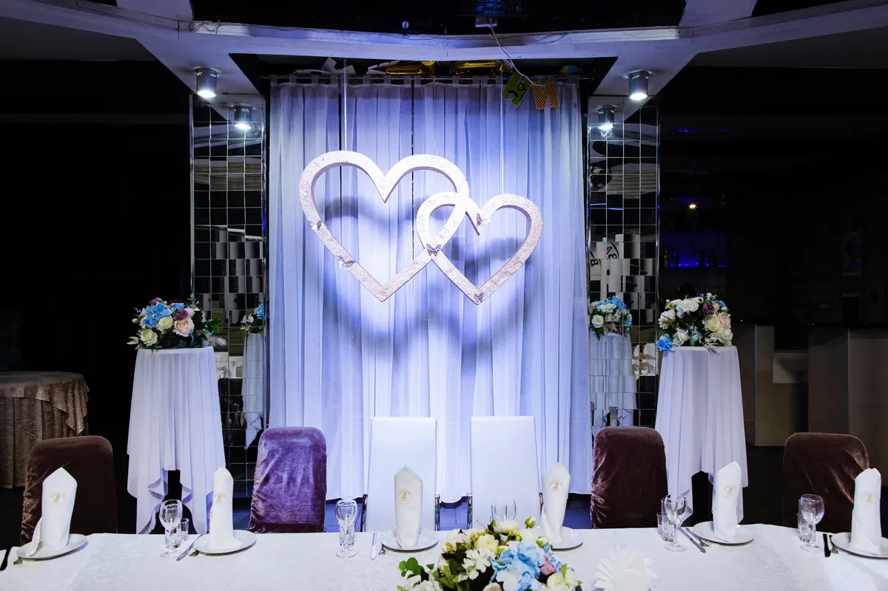
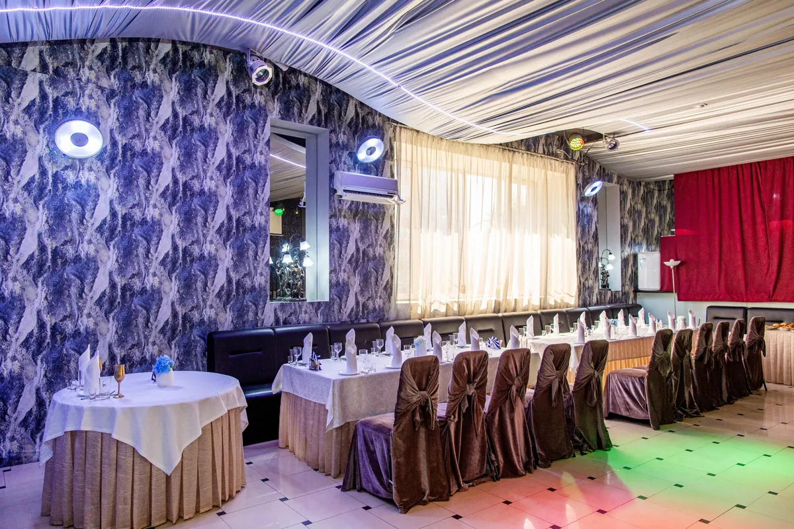
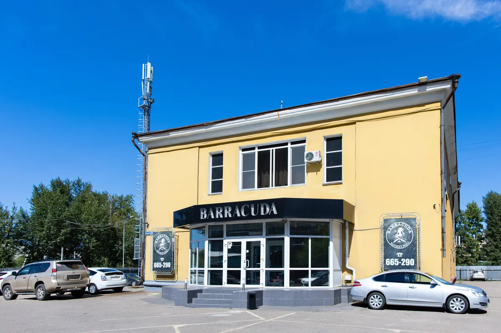

Банкетный зал · Иркутск
Банкетный зал Barracuda в Иркутске: заявка на дату свадьбы, юбилея или корпоратива
Выберите формат, день и время - чат откроется с готовым текстом. Свадьбы, юбилеи, корпоративы и выпускные в двух залах.
- Ежедневно 15:00-01:00
- Рейтинг 4,8, 220 оценок
- До 150 мест, два зала, по карточке и отзывам

Что есть в зале
Входит
- Два зала: когда идут оба мероприятия, гости друг другу не мешают, по отзыву
- До 150 мест, по карточке
- Большой танцпол
- Сцена, свет и звуковая аппаратура
- Акции и спецпредложения, по карточке
Отдельно, если нужно
- Кухня европейская, русская, авторская и домашняя
- Живая музыка, по отзывам
- Помощь администратора с меню и ведущим, по отзывам
- Можно пользоваться своей светомузыкой, по отзыву
- Большие порции, по отзывам
Форматы мероприятий
На карточке на Яндекс.Картах прайса нет, поэтому цены стоят «уточнить». Клиенты в отзывах называют цены демократичными. Здесь удобно показать меню и пакеты до звонка.
Мероприятия
- Свадьбаклиенты пишут про свадьбы на 50 и более гостейуточнить
- Юбилей и день рожденияклиенты празднуют юбилеи и дни рожденияуточнить
- Корпоративклиент пишет про корпоративыуточнить
- Выпускнойклиент пишет про выпускнойуточнить
Перечень составлен по отзывам клиентов, прайса на карточке нет. Меню, акции и условия уточняйте у администратора.
Как оставить заявку
- 01
Выберите формат, день и время
В блоке заявки вверху страницы.
- 02
Нажмите «Оставить заявку»
Откроется чат с готовым сообщением - останется его отправить.
- 03
Дождитесь ответа администратора
Он уточнит число гостей и повод и подтвердит дату.



Что говорят клиенты
Вкусная кухня
Клиенты пишут про вкусные блюда, большие порции и стол, который «ломился».
Профессиональный персонал
Гости отмечают быстрых официантов и администраторов, которые решают вопросы.
Два зала
Клиенты пишут, что в двух залах можно праздновать одновременно.
Оснащение зала
Гости хвалят акустику, свет и большой танцпол.
Отзывы с Яндекс.Карт
«Прекрасное заведение. Два зала. Причём, когда в обоих залах идут мероприятия, никто никому не мешает. Кормят вкусно. Обслуживание и техническое оснащение замечательное.»
Лариса Аникеева · 22 ноября 2025
«Отмечали свадьбу дочери в «Барракуде». Замечательный банкетный зал! Стол ломился, все очень свежее и вкусное! Обслуживание профессиональное. Гости в восторге.»
Ольга Майорова · 3 сентября
«Отличный Банкетный зал! Других слов не подобрать! Отмечали юбилей мужа, всё было очень здорово! Все гости довольны, уютная атмосфера, повара, официанты, администраторы - профессионалы своего дела!»
Анна Мальцева · 4 мая 2025
Отзывы с карточки на Яндекс.Картах, без правок.
Частые вопросы
Где находится зал?
Иркутск, улица Красный Путь, 70А.
Как оставить заявку?
Выберите формат, день и время в блоке заявки вверху страницы - откроется чат с готовым сообщением. Можно позвонить: +7 (3952) 66-52-90.
На сколько гостей можно заказать банкет?
По карточке в заведении 150 мест. Клиенты в отзывах пишут про свадьбы на 50 гостей и юбилеи. Точную вместимость каждого зала уточняйте у администратора.
Какие мероприятия проходят в зале?
По отзывам клиентов: свадьбы, юбилеи, дни рождения, корпоративы и выпускные.
Сколько залов?
Клиентка в отзыве пишет про два зала. Второй зал меньше основного, по отзыву клиента.
Есть ли танцпол и музыка?
Да, клиенты пишут про большой танцпол, акустику, свет и живую музыку.
Какая кухня?
По карточке: европейская, русская, авторская и домашняя. Актуальное меню и цены уточняйте у администратора.
В какие часы вы работаете?
По карточке: ежедневно с 15:00 до 01:00.
Оставить заявку на банкет в Barracuda
- Адрес
- Улица Красный Путь, 70А, Иркутск
- Часы
- Ежедневно 15:00-01:00
- Телефон
- +7 (3952) 66-52-90